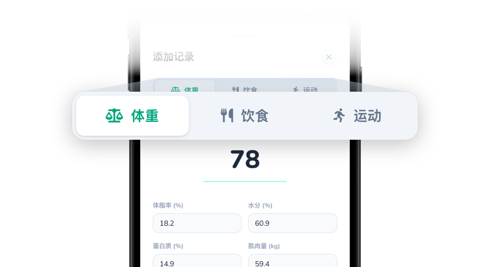
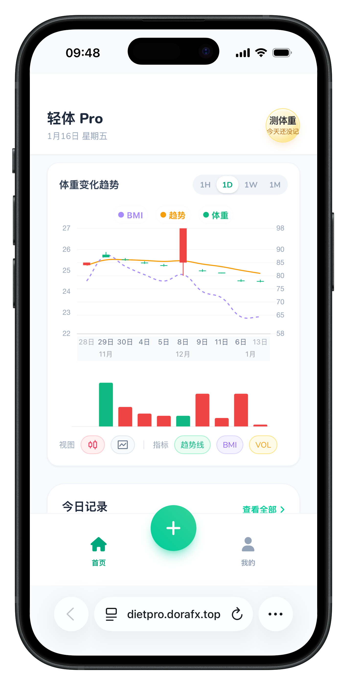

Diet Pro
{{ t('dietpro.heroSlogan') }}
{{ t('dietpro.featuresTitle') }}
{{ t('dietpro.featuresDesc') }}
{{ t('dietpro.f1_title') }}
{{ t('dietpro.f1_desc') }}

{{ t('dietpro.f2_title') }}
{{ t('dietpro.f2_desc') }}

{{ t('dietpro.f3_title') }}
{{ t('dietpro.f3_desc') }}
{{ t('dietpro.f4_title') }}
{{ t('dietpro.f4_desc') }}
{{ t('dietpro.f5_title') }}
{{ t('dietpro.f5_desc') }}
{{ t('dietpro.f6_title') }}
{{ t('dietpro.f6_desc') }}
{{ t('dietpro.copyrightTitle') }}
{{ t('dietpro.copyrightInfo') }}
{{ t('dietpro.copyrightName') }}
{{ t('dietpro.copyrightNumber') }}
Diet Pro
{{ t('dietpro.heroSlogan') }}